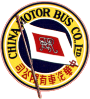

 |
China Motor Bus Co. Ltd. 中華汽車有限公司 |

簡介
中巴創辨於1924，主要創辨人是顏城坤先生，其後於1933年正式取得港島巴士服務之專利權，在這半個多世紀，中巴有許多變遷，由多人售票方式 (登車後有售票員售票給你，有錢找)，到轉為一人控制 (即不設找贖，前上後落)，都是香港其中一個大轉變。可惜在1998在9月中巴失去了擁有了65年的專利權，但仍一 條非專利穿梭路線，繼續為市民服務。
在歷史裡面中巴創出很多第一，如第一間在港島使用雙層巴士之巴士公司，亦是第一間採用三軸巴士之公司及第一間保留舊巴士作展覽之用的巴士公司。
中巴創辨初期和戰後，大多使用Tilling Stevens 出品之單層巴士 ; 到了五十年代中期，中巴引入Guy 之出品，在以前香港常見的有 Guy Arab 四型 & 五型，而早期巴士全是單層，直至1963年頭才出現第一部雙層巴士 Dennis Loline III 型，是當時港島唯一部雙層巴士，在首部雙層巴士試驗成功後，中巴於 1963 至 1979 年間大量購入雙層巴士，是另一間公司 Guy 的 Arab 五型雙層版，而有些 Guy Arab 五型雙層版在 1996 年才正式退役。
在 1972 年中巴引進兩款後置引擎雙層巴士 Daimler Fleetline 及 Leyland Atlantean。其中前者後期被中巴大量購入，沿用至現在。可是後者除了從英國購入的那批二手車，中巴並沒有再購入。到了七十代年末，中巴引入多款第二代後置引擎雙層巴士 MCW Metro Bus，Leyland Titan 及前置引擎雙層巴士 Leyland Victory Mk II、Dennis Jubilant，其中以 Leyland Titan 最旱見，因全港只有一架，而 MCW Metro Bus 11M 全球只有四十輛，亦全由中巴所擁有。
八十代年初期，中巴購入全港第一部三軸雙層巴士 MCW Super MetroBus12M，後期更引進 Dennis Condor、Alisa Volvo、Leyland Olympian 等多款三軸雙層巴士，而 Alisa Volvo 12M 全球只有兩輛，全屬中巴擁有。於八十代中期，中巴購入了首部單層冷氣巴士 MCW Metrorider，它是第一代冷氣巴士，由主獨立引擎帶動冷氣系統給巴士。
踏入九十年代，中巴購入了首批雙層冷氣巴士 Dennis Condor (DA)，它屬第二代冷氣巴士，冷氣系統由巴士引擎直接帶動。隨著這批 Dennis Condor 雙層冷氣巴士，中巴隨後更購入 Leyland Olympian (LA)、Volvo Olympian (VA) 等冷氣巴士，而亦在 1991 - 1994年間購入單層冷氣 Dennis Dart (DC & CX) 作機場線及 260 之用。
總希望有一日中巴能夠東山再起，再戰江湖 . . .